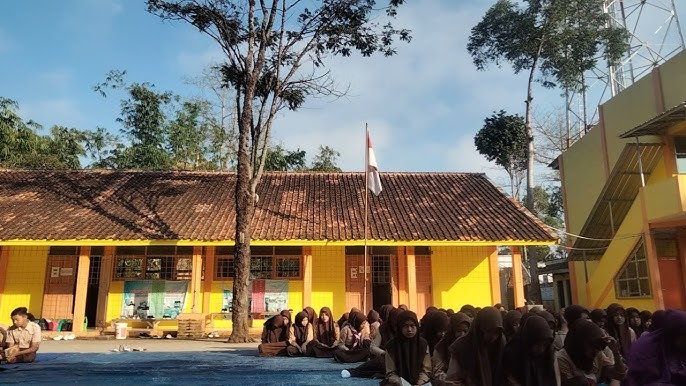
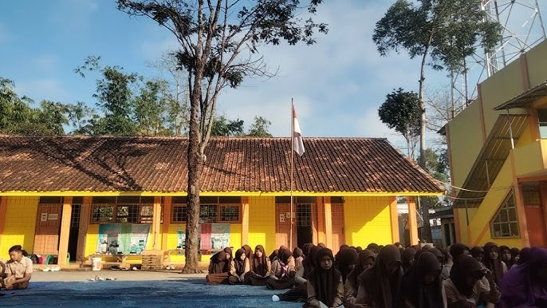

Selamat Datang di SMK As Salam Samarang
Mencetak Generasi Unggul, Kreatif, dan Berakhlak Mulia
Tentang Sekolah
SMK As Salam Samarang adalah lembaga pendidikan kejuruan yang berlokasi di Garut, Jawa Barat. Kami berkomitmen untuk menyediakan pendidikan berkualitas tinggi yang relevan dengan kebutuhan industri, sekaligus membentuk karakter siswa yang berakhlak mulia dan siap bersaing di era global. Dengan fasilitas modern dan tenaga pengajar profesional, kami mempersiapkan siswa untuk menjadi tenaga kerja terampil dan wirausaha muda yang inovatif.
Jelajahi Sekolah Kami
Mulai Virtual TourGaleri Sekolah

 

Jurusan Unggulan
Teknik Komputer & Jaringan (TKJ)
Fokus pada pengembangan keahlian dalam perakitan komputer, instalasi jaringan, administrasi server, dan keamanan siber. Siswa akan siap menghadapi tantangan di bidang IT.
Teknik Kendaraan Ringan (TKR)
Membekali siswa dengan pengetahuan dan keterampilan dalam perawatan, perbaikan, dan identifikasi masalah pada kendaraan ringan. Siap kerja di bengkel atau industri otomotif.
Akuntansi & Keuangan Lembaga (AKL)
Mengajarkan dasar-dasar akuntansi, pengelolaan keuangan, perpajakan, dan aplikasi komputer akuntansi. Lulusan siap bekerja sebagai staf keuangan atau melanjutkan studi.